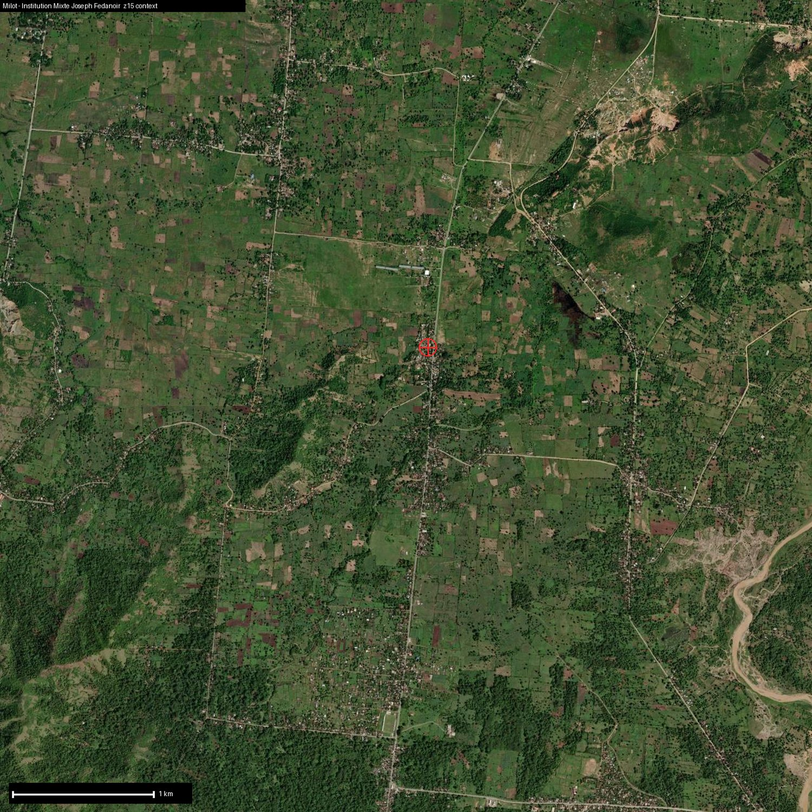

Ten youth on a school TapTap with the best road access in the set. A clean anchor, once it beats the dry season.
Good clay-loam on a paved highway, the best logistics in the set. Two real fixes: the soil is acidic at pH 5.4 and wants lime, and a sharp December-to-March dry season means dry-season output needs irrigation. Steady rainfall drives a high erosion read at 52.9 t/ha, so cover-cropping is built in.
Cassava again grades perfectly, joined by fast-cash aromatic grasses (lemongrass, citronella) and castor. Moringa is marginal here, held back by the acidic soil until the lime goes in.
Same cassava-flour economics as Quartier-Morin, plus lemongrass and citronella that feed the shared Nord aromatic still... short distillation runs that pay in months, not the years vetiver takes, so cash flows from a cheap field still while the slower crops mature.
Cheapest TapTap to get running at $6,500 (atom kit, lime, seed, cover crop, wages). The optimized $20,000 adds solar irrigation and a cistern, the direct answer to the dry season. Cross-checks the independent Milot build at $23,700.
10 young people work here today, room for 15. A six-month renewable apprenticeship at $52/month base plus a surplus share, and a 40%-rising-to-51% ownership stake in the cooperative. Binding constraint: Dry-season irrigation, and lime to lift the acidic soil.
Your purchase of cassava flour funds this TapTap directly: the wages, the equipment, the assets that stay in the cooperative. The proof of exactly what it did ships back with the harvest.
Sponsor this TapTap